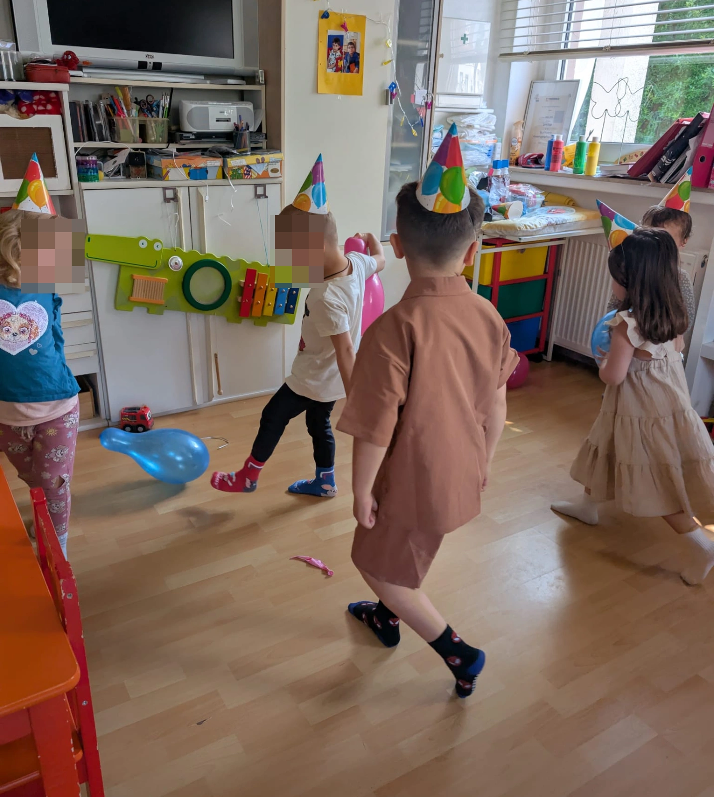
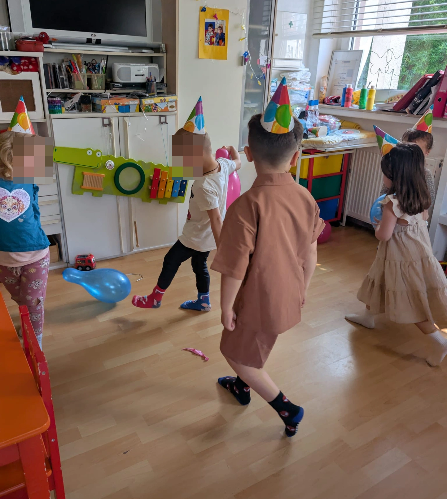
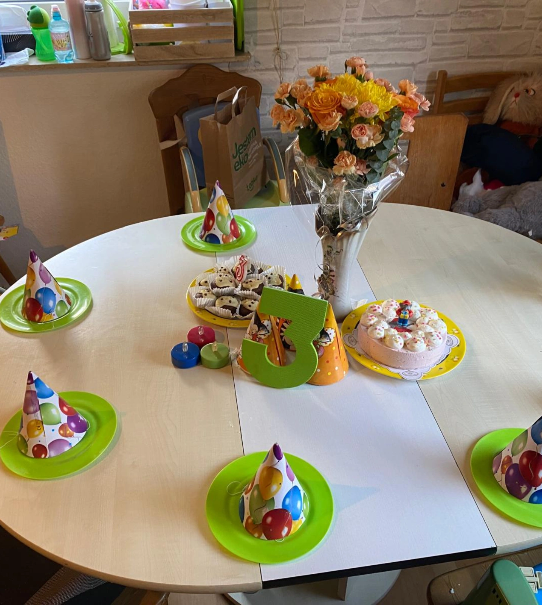
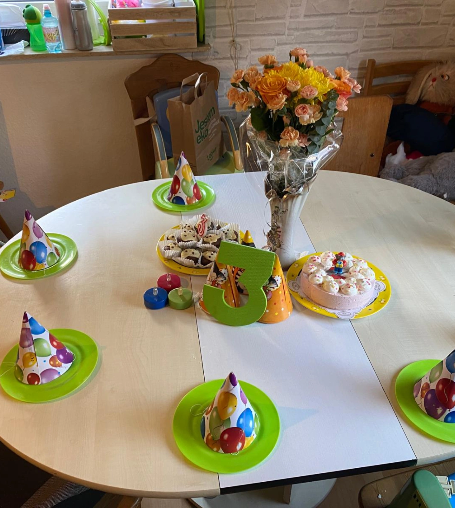
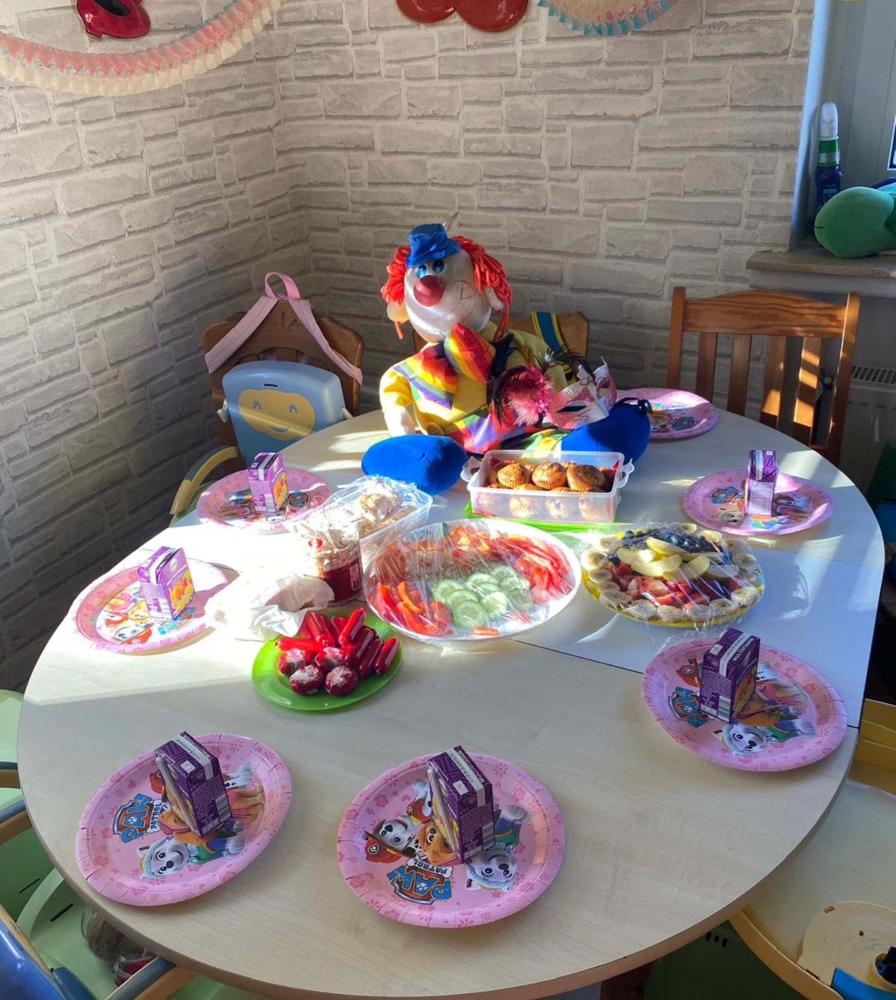
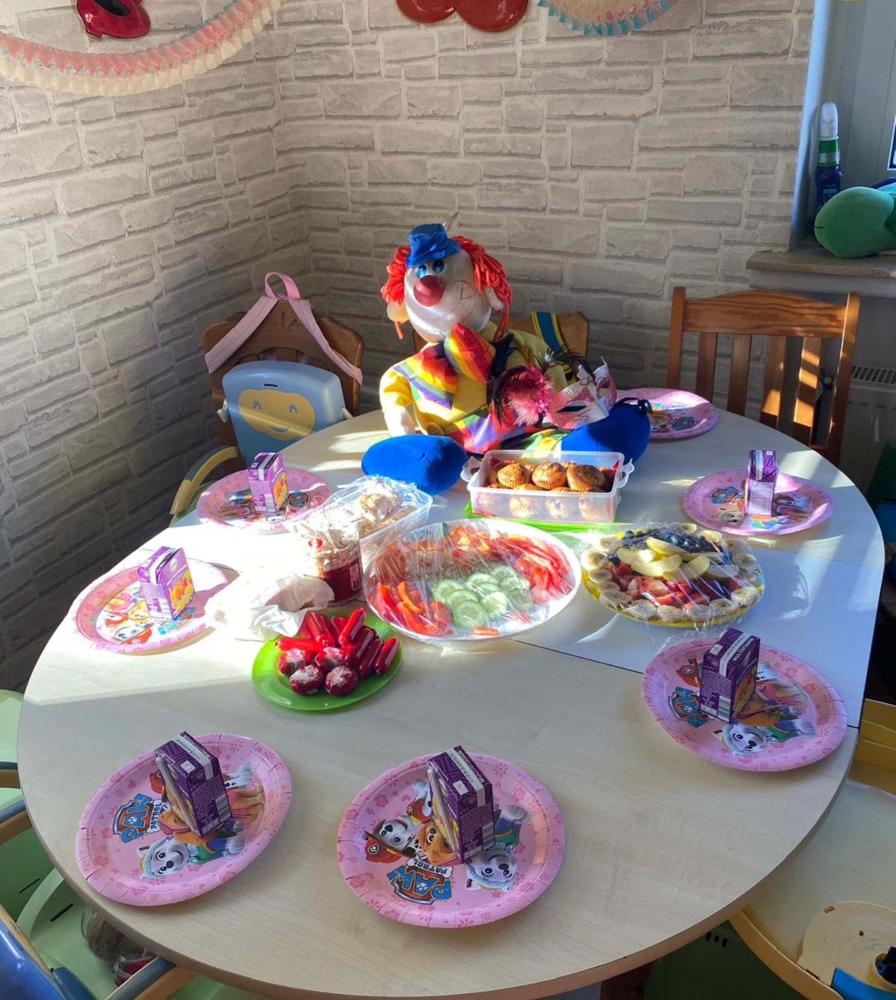
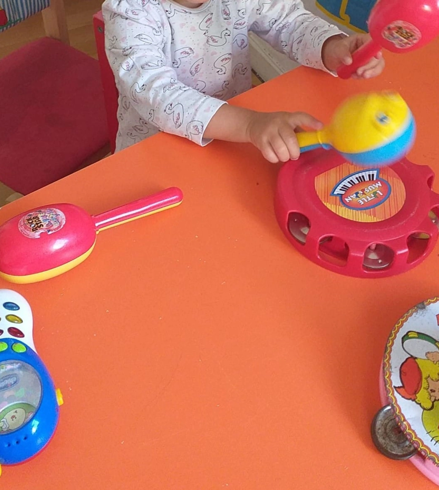
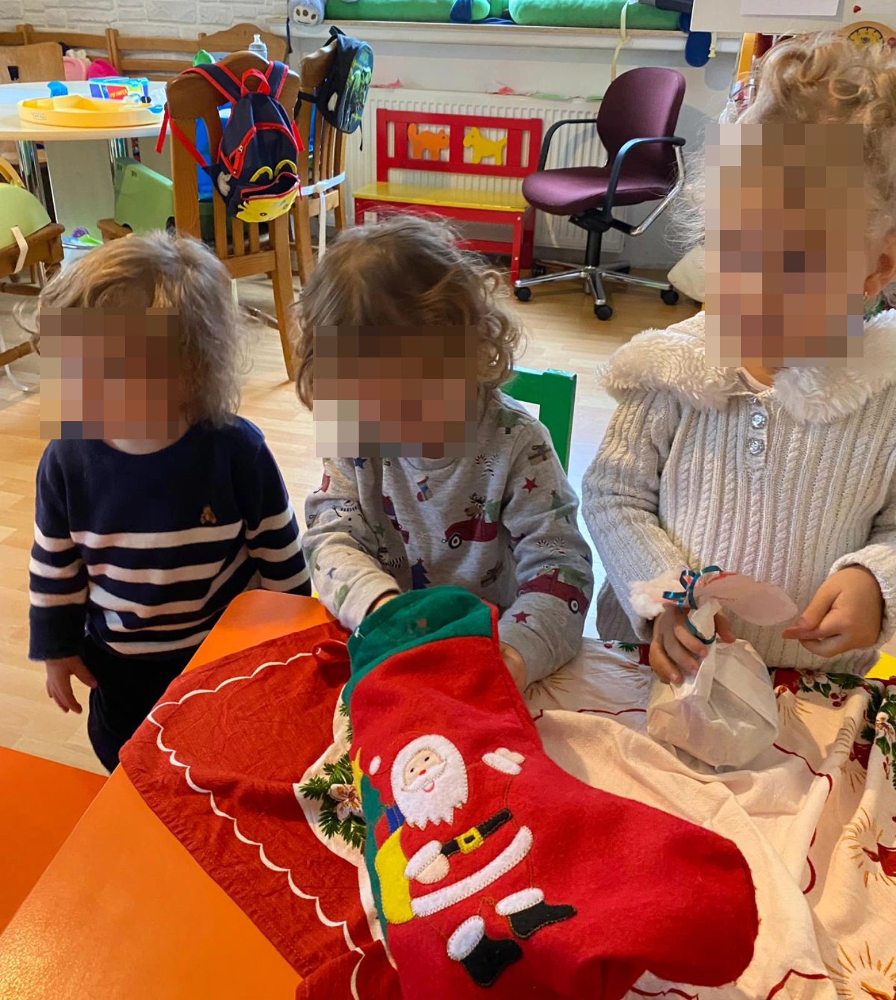
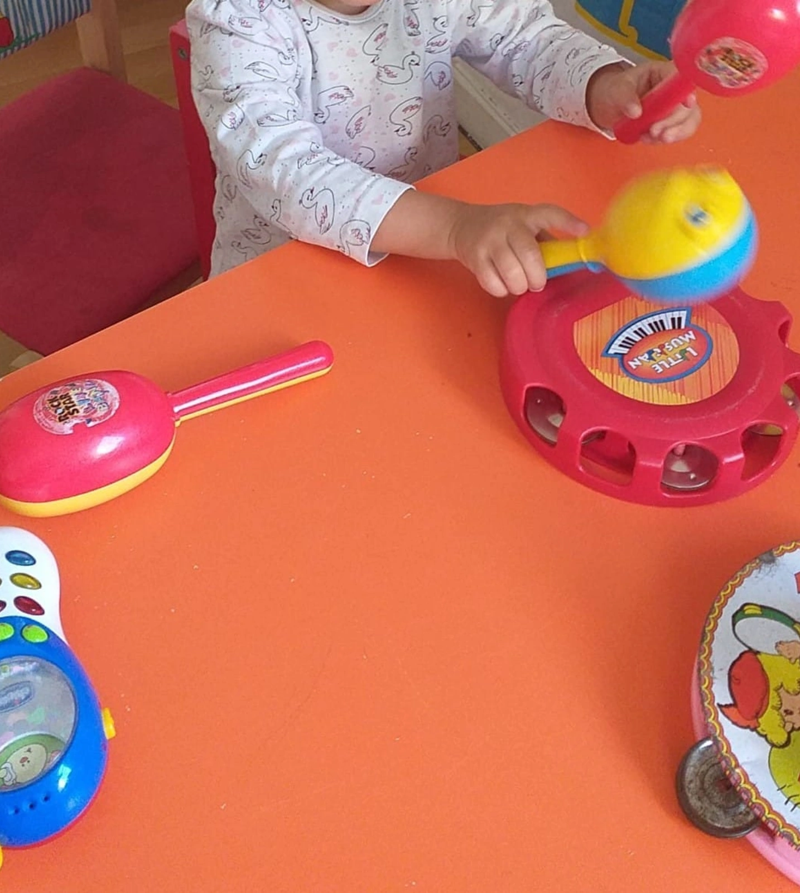
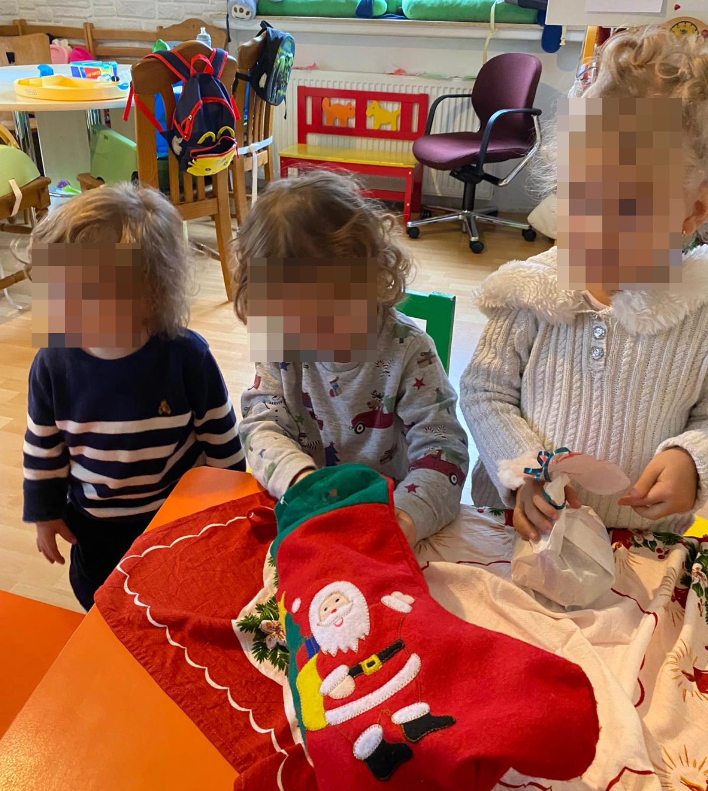

Время обслуживания::
Я предлагаю гибкое время пребывания ребенка по будням в мини детском саду. Вы можете приводить ребенка позже и забирать раньше, но в рамках часов работы, предварительно сообщив об этом. Часы работы составляют от 20 до 30 часов в неделю и согласовываются индивидуально с родителями. В настоящее время я работаю с понедельника по пятницу с 8:00 до 13:00. При необходимости и в экстренных случаях могут быть организованы дополнительные часы работы в виде ранней или поздней смены.
Сотрудничество между родителями и воспитателем регулируется договором.
 

 

 


 


